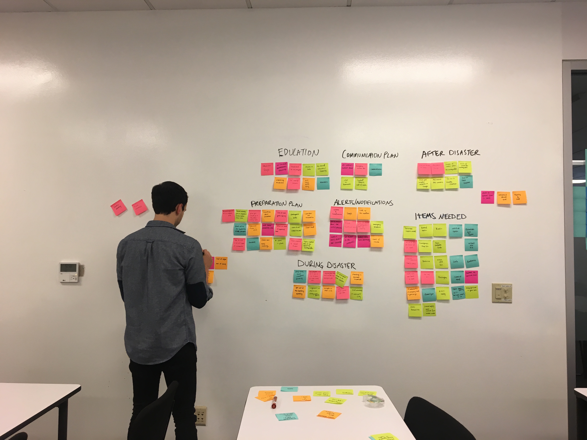

Emergency readiness mobile app to help Seattle's residents prepare for natural disasters
Project Brief:Seattle Emergency Managment was seeking our help to create a mobile app that will help bring the information from their website into the phones of Seattle residents.
Seattle Emergency Management
Pen & Paper, Omnigraffle, Sketch, Keynote
2 Weeks
Final High Fidelity Prototype, Presentation
3 UX Designers
Information Architect, Visual Designer, Project Manager
During this concept project, I was lead in information architecture and visual design as well as the project manager of our UX design team. I did the business research of the project through a comparative analysis of features in the disaster app market and a heuristic analysis of top apps. I created the current sitemap and mobile sitemap, hi fidelity prototypes, and the Ready Seattle branding. I also lead the presentation of design solutions.
We evaluated the current website in order to determine what information would be pertinent for our app. I created the sitemap of the current website so that we could understand how Seattle Emergency Management organizes their content and how they lay out information to the user. The information on the site was very dense and split into many different categories based on whether the user was an individual, school official, or business owner. The amount of information was pretty overwhelming but we decided to focus on the individual since this would be for a personal mobile application.
I lead the comparative analysis of disaster prep apps in the market so that we could review potential features. Although FEMA and Red Cross had the most to offer to a user, they were incredibly bloated in features and made preparing for an emergency a daunting task. Ready NYC was a better example of helping a city’s residents get prepared and provide information during an emergency, but it only provided information for NYC and had some major design issues.
The important features we found were:
We did a full heuristic evaluation on Ready NYC because it was the best conveyer of a citywide emergency preparedness mobile app. We found that the app was strong in facilitating user tasks, had great readability and information architecture. The app struggled with unclear labeling, inconsistent design/branding and providing context for the user.
The app was good at:
Some improvement was necessary to fix:
Our researcher interviewed 5 Seattle residents about natural disasters.We then pulled quotes from the interviews and created an affinity diagram so that we could uncover some common themes and pain points.
From the research the common issues were:
From the research, we developed our persona Jake Anderson. From our interviews and research, we created the Jake Anderson persona that we would design the new Seattle Emergency Management mobile app for. Jake embodied a lot of the feelings that people we interviewed had about emergency preparedness. He had heard that there may be a major natural disaster in Seattle (especially an earthquake), but hasn’t experience any disaster himself. He knows he needs to prepare but is unsure of how to do so and thinks it may be a daunting task.
Seattle’s millennials don’t consider being prepared for a natural disaster an important or easily actionable problem.
To make a mobile app that simplifies disaster preparation and disaster information in order to increase the readiness of Seattle residents by 6%
Responding to Jake's persona and the problem, we brainstormed and prioritized a list of potential features.

After researching, we came up with 5 main screens that best fit our persona needs and our client’s needs. In order to help our Jake learn about natural disaster safety, we would have an alerts page, emergency information page and a map of disasters and shelters. In order to help Jake prepare for a disaster, we created an emergency go bag checklist.
We created a paper prototype to help create an Emergency Go Bag, provide emergency information, and alerts.
From usability testing, we found:
In a design studio, we developed a new Go Bag screen with a visual that would show what items have been added and what percentage the user has collected.
We wanted to focus on the user motivation for completing tasks by giving them a success metric and indicating their progress.


After paper prototypes and design studio, our interaction designer created clickable wireframes.
On the positive side, users were able to complete all of the tasks that they were presented with during the test. The items that users had issues with were focused mostly on the labelling which was due to a lower fidelity wireframe. Elements that needed improvement were:
As lead information architect, I wanted to focus on having as few screens as possible and focus on responding to the needs of the persona and our client. While the current website had a lot of information, not all of it was pertinent to disaster preparation and made little sense to include in a mobile app. In the sitemap visual, you can see the first and last iteration of the mobile app information architecture. There are a few major changes:
Currently, the brand of Seattle Emergency Management doesn’t really exist in any sense of colors, iconography or consistent imagery so I started from scratch when creating the ReadySeattle brand.
As the lead in visual design, I began by researching Apple’s Human Interface Guidelines (HIG) to ensure that the app design aligned with iOS standards. From the HIG, I determined that we should use the iOS system font family of San Francisco which focused on readability and scannability; this was important in our comparative analysis and something we wanted to include our app.
For the primary logo, I was inspired by a disaster preparation infographic from our client of an emergency bag. After some research, I found out that the emergency go bag was a well known image of emergency readiness, which was fitting for our primary logo. I created some secondary logos sans the icon to be used in the app and by our client. The iconography was influenced by some icons that our client had used in the past but was updated with our ReadySeattle brand. The color palette was chosen by researching earthquake alert colors and then choosing slightly brighter shades to be appealing to users.
With our style guide complete, I created our loading screen and emergency alert notification modal. For usability tests, we went through 3 major flows through the app.

After entering, the user lands immediately on the Alerts page where view alerts and the time it was issued. To respond to user feedback, arrows let users know its clickable to see additional alert details. They can click the hyperlink I created to see the alert on the map. In response to users, I created a legend on the map to provide context for the pins.

The Go Bag flow is where users collect materials for emergencies. Here, I added a description of the Go Bag to help inform our users of its meaning. I also provided them with a responsive visualization as they added items to their Go Bag as the bag is filled it will look more like the final app logo.

For the final flow about emergency resources, I renamed the “Info” page to “Resources” based on where users were navigating for natural disaster information.

We received the following final usability test findings: